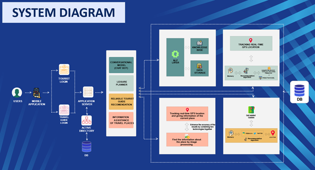

Lit. Survey
Previous studies have been carried out in recent years in order to develop intelligent system
for the travelers. Tourism and hospitality management industry demands constant
communication with the stakeholders through which they can get updated with the newest
offerings and information. Hence, organizations related to tourism and hospitality invest a
huge amount of capital on this. Yet, Grace (2009), and Kim and Yoon (2004) emphasize that
still there are issues and dissatisfaction among stakeholders related to communication. Hsu
et al. (2017) depict chatbots are effective and have many advantages in the field of tourism
and hospitality management. In fields like airline experiences the effectiveness of chatbots
while certain fields show reluctance in adopting these systems to their firms. Hatwar et al.
(2016) introduce chatbots as applications with the capability to interact with humans
through oral, written, or mixed conversation. Besides, Khanna et al. (2015) explain that
chatbots can understand various human related languages by incorporating Artificial
Intelligent markup language and natural language processing. Thus, it is evident that
chatbots are user-friendly and practical applications of artificial intelligence.
Henceforth, incorporating chatbots in the field of tourism industry is beneficial in many
aspects. Accessibility of the customers to the company’s offerings in pre-sale and
post-sale. Besides, the afore-mentioned advantages, chatbots can be used to perform
administrative and non-skilled tasks like setting reminders, arranging appointments,
reserving tickets, and acknowledging about traffic and weather updates. Consequently, any
firm related to tourism as restaurants, hotels, information centers, car rental services,
and travel agencies could be benefited from this application.
There is another research that was done by a group of graduate students from Aligarh Muslim
University, Aligarh, India. This research project's main goal was to exclude the necessity
for a paid human tour guide. The application proposed by the research project team might
recognize a monument or a prominent landmark based on an image that is either snapped or
else uploaded to the application. In addition, by simply entering the name of a monument,
information about it could be retrieved. This app could also locate the location on a map.
Aside from that, it had a variety of features, such as the ability to keep separate
collections for dissimilar places. It also provides the users’ current location as well as
many other interesting sites in the area. It was possible that the app could also provide
information on neighboring cafes, restaurants, and other businesses. Accordingly, The
application was particularly helpful for the travelers who were visiting a new location for
the first time. It might assist them in learning more about whatever the location that they
were visiting, as well as the history associated with that location. It is beneficial to the
public by offering information about neighboring attractions. It could also be used by
locals to learn more about the prominent monuments and buildings in their area. They could
use this system to learn about the history of any renowned buildings in the surrounding.
The recommended system (RS) was proposed by Sebastia et al. and Garica et al. in years
between 2008 and 2010 to recommend tourism destinations to the users. The type of preferred
tourist destination, as well as the corresponding degree of each preference must be entered
by a first-time user of this system. Accordingly, the traveler must include the desired
travel destinations for the current trip and should added the degree of preference orderly
for the systematic operations. According to the data given at client enlistment and the data
provided for the ongoing tour, as well as the other users' preferences, the algorithm will
choose a series of tourist attractions. Xie and colleagues presented a way of organizing
trips to tourist locations that also aids users in rapidly identifying places to visit by
integrating the RSI [9]. Unlike the technique described by Garica et al., the system
proposed by Min assists the traveler by providing a trip itinerary and in order to choose
the best sceneric place to visit, it evaluates the number of ratings of the places within
external database and many-component RS. A place of interest (POI) could also be an
attractive location that the traveler will find interesting to visit, which may be utilized
in travel planning. As a result, each package contains a large number of POIs, and each POI
in the package must meet the package's upper-cost limit as well as any time constraints.
Nevertheless, by considering all the travel schedules provided by the application, the
traveler will choose a package or a schedule according to his or her preference.
The research paper by way of Sahar A. El_Rahman, Feddah Alhumaidi & Wejdan Abdullah AlShehri
proposed a sentiment analysis of twitter data. The researchers have created a model that
included various algorithms to improve the accuracy of identifying tweets as positive,
negative, or neutral. In circumstances where previously labeled data was not available, the
proposed methodology by the researchers combined the use of an unsupervised machine learning
algorithm along with a lexicon-based algorithm. Following that, the data were loaded into a
set of supervised models. Various measures were tested in this research and cross-validation
revealed that maximal entropy has the best accuracy. As a result, both unfavorable and
favorable reviews showed that McDonalds seems to be more popular than KFC. According to the
findings of the studies, the same concept could be applied to various of fields, such as
detecting disease-spreading rumors on Twitter. Furthermore, this team of researchers
believed that an algorithm which can classify tweets automatically.
Research Gap
| Number | Features | Other Similar Systems and Applications | JESSY |
|---|---|---|---|
| 1 | Suggesting Human travel agent | ||
| 2 | Reviewing system | ||
| 3 | Rating system | ||
| 4 | Comprehensive Review outcome | ||
| 5 | Ability to suggest what best for the user | ||
| 6 | Understand the differences between the components | ||
| 7 | Verified Resources and information | ||
| 8 | User Friendly Mobile Device | ||
| 9 | Scan the places & get information | ||
| 10 | Pop up notifications for nearby travel places | ||
| 11 | Create tour route with minimum traffic condition on route | ||
| 12 | Nearby location tracking system | ||
| 13 | Identification nearest tourist visiting places, restaurant and activities according to the traveller preferences | ||
| 14 | Recommended the nearest best consumer restaurant for the tourist | ||
| 15 | Analyse user preference’s using NLP and AI collaboration filters |
Research Problem
Since the end of thirty years war, the tourism industry of Sri Lanka has begun a rapid growth
for
the global tourists’ advents and tourisms incomes. This rate of growth in tourism industry
once
again degraded due to the Easter Sunday Attack which happened during April of 2019.
According to
the records, it is mentioned that Sri Lanka has lost nearly US $ 1.5 billion of tourism
revenue.
Even if Sri Lanka was able to recover again the COVID19 virus has caused a considerable
damage
for the tourism industry again. As of now, thousand number of tourism services in the range
of
souvenir sellers to blue chip companies have entered to an unstable period with zero
revenue.
This prompt us how fragile the responsibility of tourism industry in Sri Lanka towards the
outside shock waves.
Although Sri Lanka has been successful to a significant level of controlling the pandemic
situation, it is very unlikely to see that foreign and local travelers engage in leisure
trips.
Therefore, Sri Lanka needs to take immediate actions on increase tourism attraction. As per
research done on available technologies, safety methods and controls on tourism industry,
the
project team found several crucial situations that needed immediate attention. One of the
foremost problems in tourism industry in our country is that they do not have an accurate
mobile
technology get linked with tourists. Even if there are so many mobile platforms, still there
is
no centralized platform which have been addressed each major problem mentioned below. It has
become a key challenge to tourists who visits Sri Lanka to find a human tour guide for
themselves. Even if they found themselves a tour guide, there can be more issues because
some
human guides utter nonsense, delivering content is not accurate, lack of communication due
to
language issues. In other way around, there are talented Sri Lankans who do their best
towards
the tourism industry as tour guides. The issue here is that they do not have a platform to
get
connected with tourists directly. Same time, there is a higher chance of Sri Lanka to be
visited
by budget travelers including both local and foreigners who would not have enough
possessions to
hire a human tour guide. Also, there is a high risk of safe health during this pandemic for
both
travelers and tour guides and we as Sri Lankans have experienced such incidents last year
due to
spreading COVID19 via a group of Italian visitors and a tour guide. As per stated, the
available
technologies do not contain any virtual assistant guide instead of having a human guide.
Another
main fact that should needs the attention is safety of tourists. Still there is no one
centralized mobile platform which specifically created to tourists for their complaints and
contacting authorities for any type of harassment within the Sri Lanka. In a traditional
country
like Sri Lanka, it is more likely to have physically and mentally harassment such as being
robbed, murdered, or sexually threats.
Another issue in that mobile technologies is that there is no intelligent guidance for plan
leisure time in the range from selecting nearby places to visit and restaurant to eat
according
to travelers’ preferences. There are some mobile applications for such problems but still
there
is a high gap of not having a single platform which performs each function, and which is
user
friendly. Therefore, the need of a multitasking digital guide app with intelligent guidance
should be undertaken at highest priority.
In accessing the subdomain of having a reviewing system that can provide a better example
for
the users in order to make sure that the experience and the behavior can be channeled into a
better set of reviewing rather than a linear set of reviewing system. So that the users can
have
a better understanding about what they are getting into and what they are dealing with. That
inspect is become a vital for the users and that has become the segment of the issue for
this
research.
Research Objectives
Methodology
Technologies Used
Clean Design
Increase sales by showing true dynamics of your website.
Secure Data
Build your online store’s trust using Social Proof & Urgency.
Retina Ready
Realize importance of social proof in customer’s purchase decision.
Clean Design
Increase sales by showing true dynamics of your website.
Secure Data
Build your online store’s trust using Social Proof & Urgency.
Retina Ready
Realize importance of social proof in customer’s purchase decision.